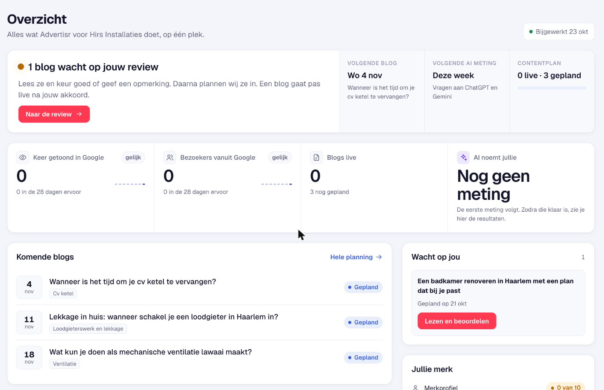
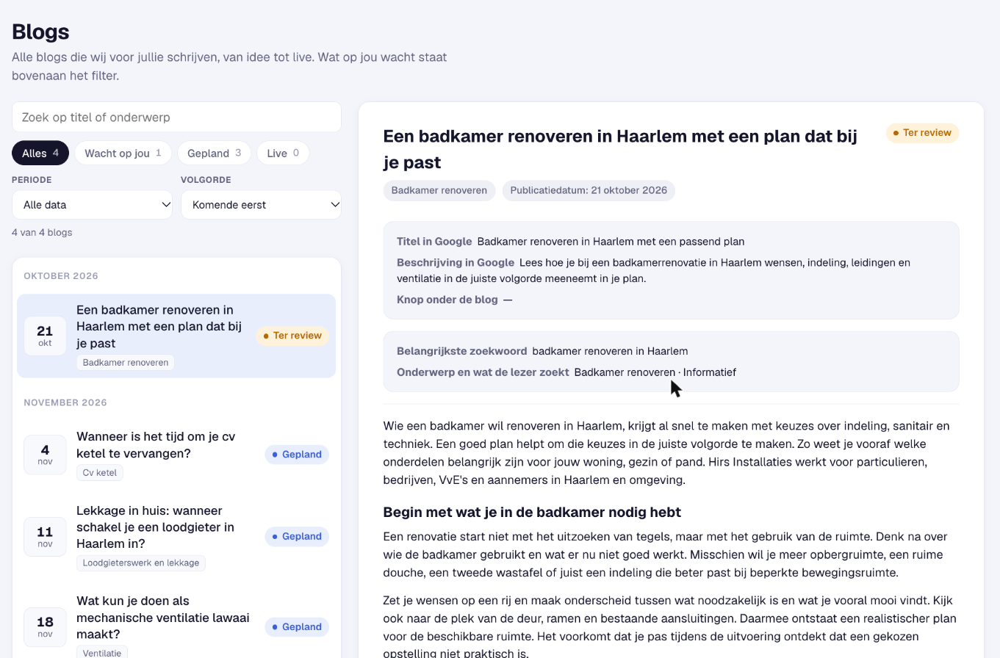
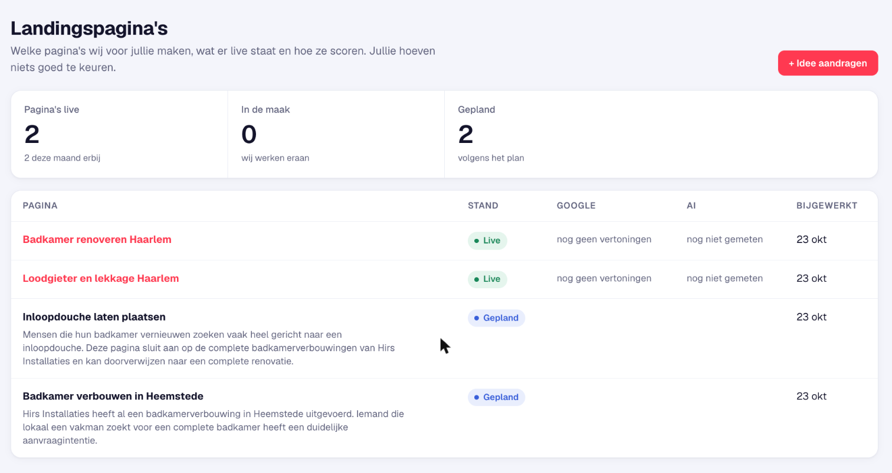
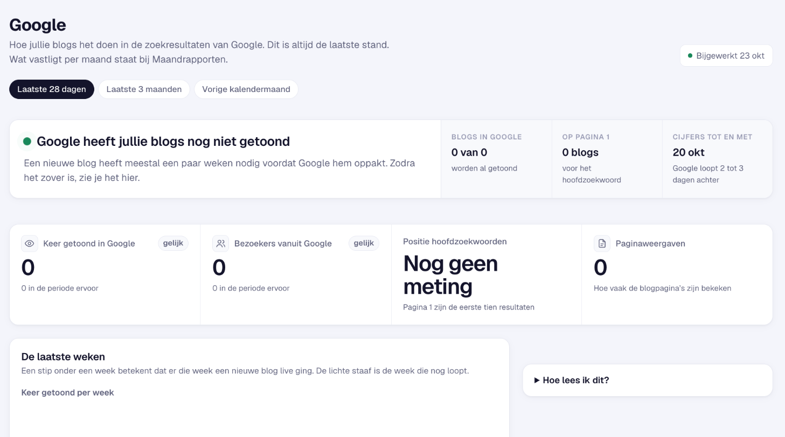
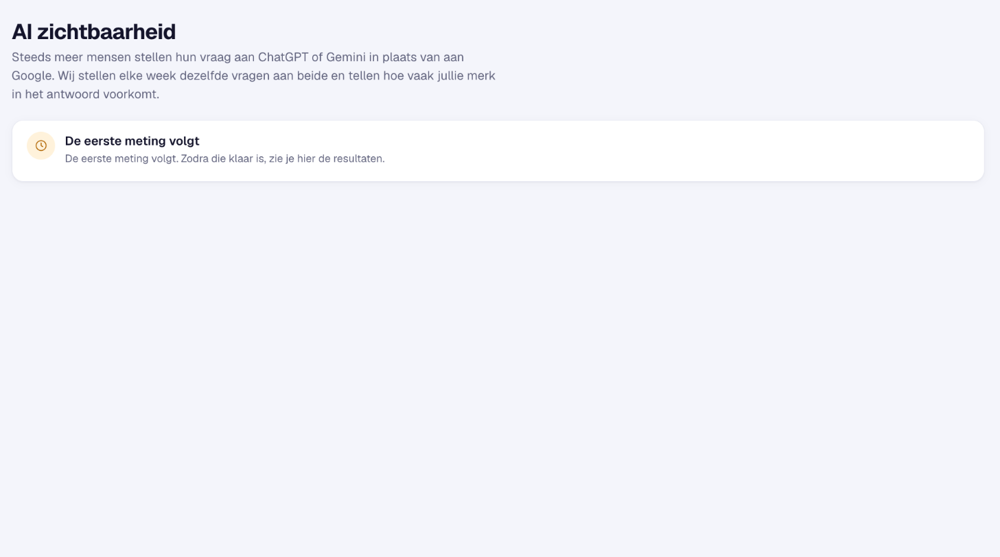
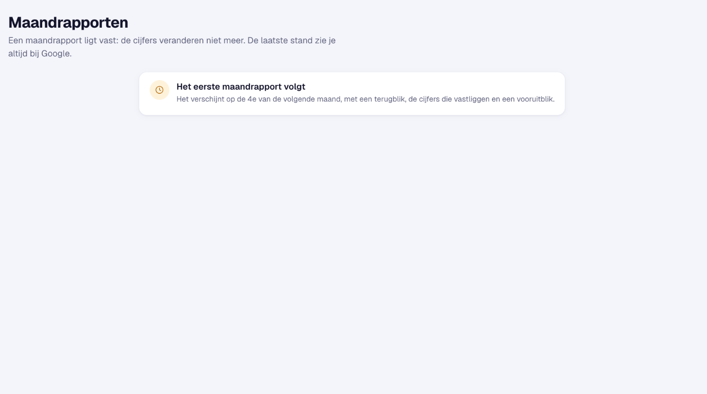
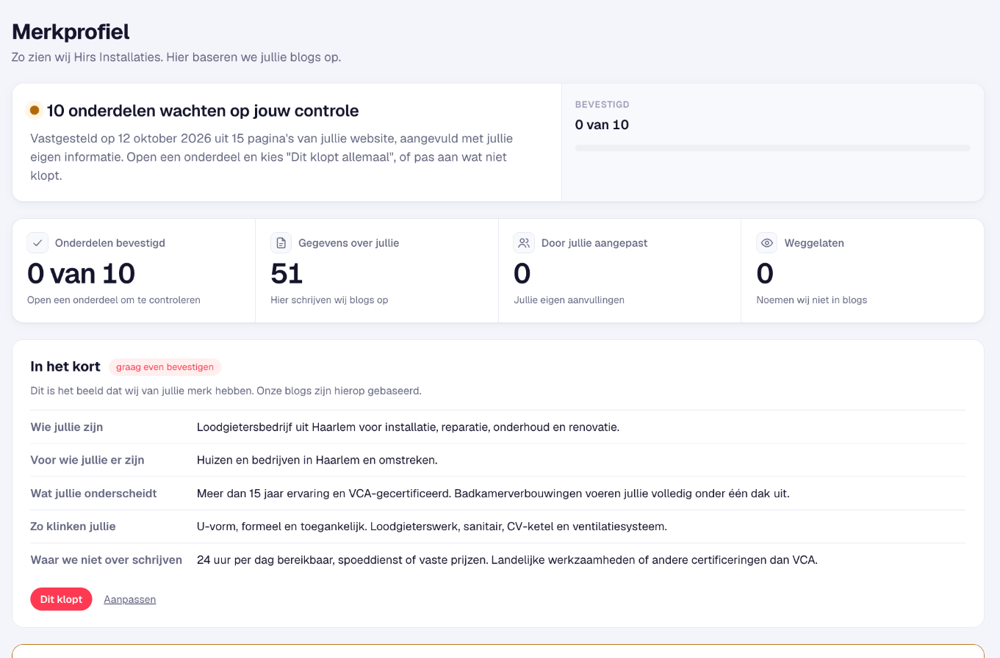
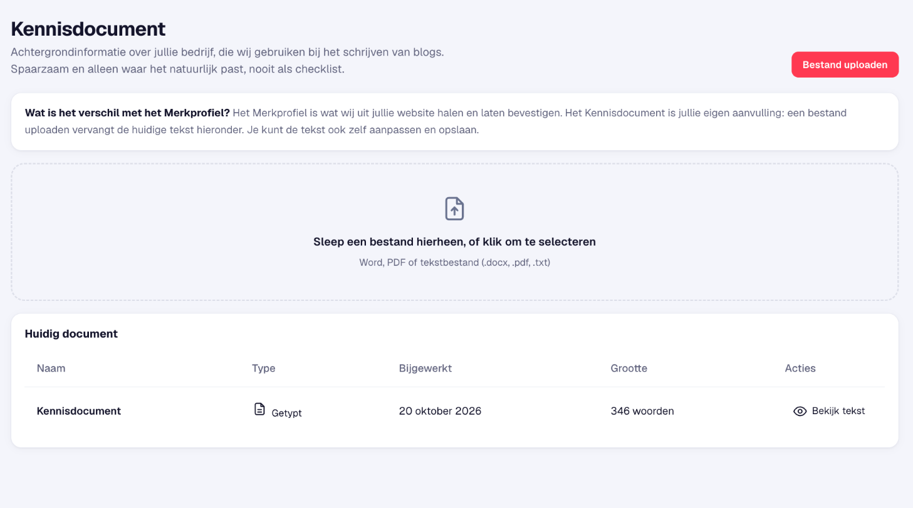
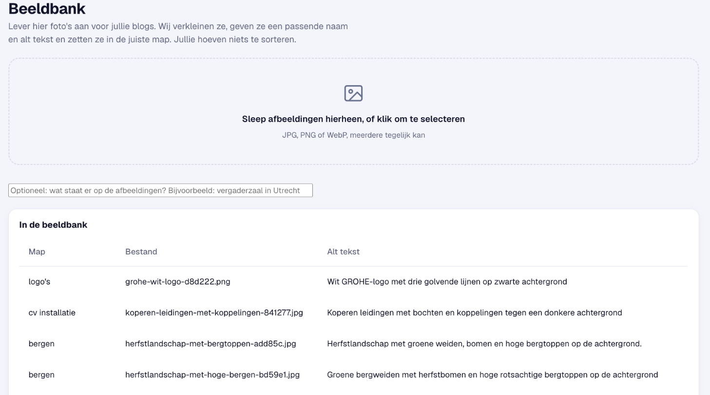

Dit zijn de gegevens die je het vaakst nodig hebt. Bewaar deze pagina.
Open deze link in je browser. Je hoeft niets te installeren en het werkt ook op je telefoon.
Dit is het wachtwoord voor jullie portaal. Collega's die mee beoordelen kunnen hetzelfde wachtwoord gebruiken. Deel het alleen binnen jullie bedrijf.
Zodra een blog klaarstaat, krijg je op dit adres een mail met een knop naar de blog in het portaal. Willen jullie een ander adres, laat het ons weten.
Zo spreken we jullie aan in de mails.
Geschreven in jullie toon, gecontroleerd op feiten en door jullie goedgekeurd voordat ze live gaan.
Landingspagina's per dienst en plaats, in de stijl van jullie website. Jullie hoeven niets goed te keuren.
Cijfers uit Google elke dag bijgewerkt en elke week een meting in ChatGPT en Gemini.
Je ontvangt deze handleiding. Neem rustig de tijd om het portaal te bekijken.
Je eerste reviewmail. Daarin staat de eerste blog klaar: {{eersteBlog}}. Lees hem en keur hem goed, of geef feedback.
De volgende blog. {{volgendeBlogTitel}}. Je krijgt een mail zodra hij klaar is.
Nieuwe AI meting. We stellen dezelfde vragen aan ChatGPT en Gemini en tellen hoe vaak jullie bedrijf in het antwoord voorkomt.
Je maandrapport. Het verschijnt op de 4e, met een terugblik en een vooruitblik.
Stuur een mail, dan komen we er zo snel mogelijk op terug.
Het portaal heeft een vast menu aan de linkerkant. Hieronder lopen we het door, van boven naar beneden.
Dit is je startpagina. Bovenaan staat wat op jou wacht, bijvoorbeeld een blog die je moet beoordelen. Daarnaast zie je wanneer de volgende blog komt en wanneer de volgende AI meting is.

Hier staan alle blogs, van idee tot live. Kies links een blog en lees rechts de volledige tekst, met de titel en omschrijving die Google toont en het zoekwoord waar de blog op gericht is.
Klik in de mail op de rode knop, of kies in het menu Blogs en dan de blog met de status Ter review.
Let op of alles klopt over jullie bedrijf: diensten, werkgebied en wat jullie wel en niet doen.
Goedgekeurd? Dan plaatsen wij de blog op jullie website. Feedback? Schrijf in gewone woorden wat anders moet. Wij passen de blog aan en sturen hem opnieuw ter review.
Er gaat nooit iets live zonder jullie akkoord. Blijft een blog liggen, dan sturen we na een week en na twee weken een herinnering.
Pagr. maakt pagina's per dienst en plaats, in de stijl van jullie website. Je ziet welke pagina's live staan, welke in de maak zijn en welke gepland zijn. Jullie hoeven niets goed te keuren.


Hoe vaak jullie getoond worden, hoeveel bezoekers dat oplevert en op welke plek jullie staan. De cijfers lopen twee tot drie dagen achter. Een nieuwe blog heeft meestal een paar weken nodig voordat Google hem oppakt, dus de eerste weken is het rustig.
Tip: kies bovenaan de laatste 28 dagen, de laatste 3 maanden of de vorige kalendermaand.
Steeds meer mensen stellen hun vraag aan AI in plaats van aan Google. Wij stellen elke week dezelfde vragen aan ChatGPT en Gemini en tellen hoe vaak jullie bedrijf voorkomt. Zo zie je of jullie zichtbaarheid groeit.
De eerste meting volgt in de eerste week. Tot dan staat hier een melding.


Op de 4e van de maand verschijnt het rapport over de maand ervoor, met een terugblik, de cijfers die vastliggen en een vooruitblik. Je kunt het als PDF downloaden en delen. De actuele stand zie je altijd bij Google.
Drie onderdelen waarmee je de blogs en pagina's persoonlijker en juister maakt.
Wij hebben het merkprofiel al gevuld met wat we weten uit jullie website en uit onze gesprekken. Jullie hoeven alleen te bevestigen wat klopt en aan te vullen wat nog mist of niet klopt. Alles wat je bevestigt, gebruiken de blogs direct.


Heb je een folder, werkwijze of prijsafspraken die de schrijver moet kennen? Upload een Word, PDF of tekstbestand, of pas de tekst zelf aan. De blogs gebruiken het spaarzaam en alleen waar het natuurlijk past, nooit als checklist.
Eigen foto's maken blogs en pagina's veel sterker dan stockfoto's. Sleep ze hier naartoe. Wij verkleinen ze, geven ze een passende naam en beschrijving en zetten ze in de juiste map. Jullie hoeven niets te sorteren.
Tip: projectfoto's van een badkamer, ketel of installatie werken het beste. Geen foto's? Dan gebruiken we beelden uit de bibliotheek.

Meer is er niet nodig om te starten. De rest doen wij.
Je krijgt hiervoor een aparte mail. Lees de blog, keur hem goed of geef feedback. Zo weten we meteen of toon en inhoud kloppen. Dit duurt ongeveer tien minuten.
Open het tabblad Merkprofiel. Wat we al weten, staat erin. Bevestig wat klopt, en vul aan of kies bij wat nog mist of tegenspreekt. Dit duurt ongeveer vijf minuten.
Sleep projectfoto's naar de Beeldbank.
Voeg een folder of werkwijze toe in het Kennisdocument.
Weet je een vraag van klanten? Geef hem door en wij nemen hem mee in de planning.
We passen niets op jullie website aan zonder dat we dat samen hebben afgesproken. En er komen geen verzonnen klantverhalen, cijfers of beloftes in een blog of pagina.
Mail ons gerust, ook voor een kleine vraag. We helpen je op weg of nemen het uit handen.